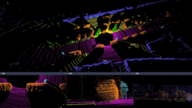
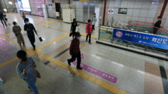

![Meet your Facilitators / 01 / Sylvester K. Sakitey / Head of Projects / Project Management / AI & Digital Technologies / Strategic Planning / Operations Management / Data Labeling & Quality Assurance / Training & Capacity Development / Drone Technology (UAVs) / 02 / Emmanuel Owusu Appiah / IT & Facilities Manager / Data Protection Supervisor / Data Protection & Compliance / IT Infrastructure & Facilities Management / Training & Capacity Development / Workforce Development / Project Management / Quality Assurance / AI Data Annotation & Operations / DATAMAKER GHANA LIMITED](assets/tot1/slides/s03.jpg)
![How Today Runs / DAY 1 / DAY 1 SCHEDULE / Five contact hours including one hour of breaks. Each block ends with a short check of understanding. / Time / Activity / Day 1 content / 09:00 – 09:15 / Welcome, objectives and review / Programme introduction, learning outcomes, ground rules / 09:15 – 10:30 / Facilitated lesson / Module 1.1 – AI, machine learning and data labeling / 10:30 – 10:40 / Break /, / 10:40 – 11:00 / Demonstration and guided practice / Module 1.2 – The nine-stage data-labeling workflow / 11:00 – 12:10 / Group exercise / Module 1.3 – SYNAPSE demonstration and guided annotation / 12:30 – 13:30 / Break /, / 13:30 – 13:45 / Application, discussion and feedback / Module 1.4 – The trainer’s role and the training cycle / 13:45 – 14:00 / Knowledge check, reflection and daily review / Paired practical assessment and Day 1 review / TODAY’S PRACTICAL OUTPUT / A demonstrated annotation task on the agreed demonstration dataset, and a short lesson plan each participant can teach from.](assets/tot1/slides/s04.jpg)
Walk through the day so participants can plan around breaks.
Emphasise the two outputs at the bottom: by the end of today each person must have (1) demonstrated an annotation task themselves and (2) drafted a short lesson plan. Both feed into the Day 3 teach-back assessment.
Confirm platform access now, not at 11:00. Ask who does not yet have SYNAPSE credentials and resolve it during the first break.
![What You Will Be Able To Do / DAY 1 / 3 / 42 / PROGRAMME OUTCOMES / Eight outcomes across three days. Day 1 covers the first three and introduces the fourth. / 1 / Explain the fundamentals of AI data labeling and its role in developing AI systems. / 2 / Demonstrate core annotation workflows using the SYNAPSE platform, subject to project configuration and access. / 3 / Interpret annotation guidelines and explain task requirements to trainees. / 4 / Apply standard quality-control, error-correction and calibration procedures. / 5 / Plan and monitor a data-labeling assignment, including staffing, allocation, productivity and deadlines. / 6 / Maintain project records, production trackers, issue logs and progress reports. / 7 / Identify risks, escalate unresolved issues and communicate operational changes appropriately. / 8 / Design and deliver a structured training session and assess trainee competency. / DAY 1 FOCUS / Outcomes 1 to 3, with the first exposure to outcome 8 through the trainer’s role and the paired practical.](assets/tot1/slides/s05.jpg)
Do not read all eight aloud. Point out that outcomes 1–3 belong to today, 4–7 to tomorrow and 8 to Day 3.
Make the standard explicit: competency means performing the task independently to the required standard, not attending the session. Attendance alone is not evidence of trainer readiness.
![AT A GLANCE / Two Phases, One Career Pipeline / ROLE PATHWAY / Project Manager / Plans, staffs and tracks projects / PHASE 1 · 3 DAYS / Training of Trainers / AI foundations and SYNAPSE platform operations / Quality control, project and trainee management / Session design with AI and mock teaching / Trainers, team leads and coordinators ready to support labeler cohorts / Quality Manager / Guidelines, QA and calibration / Labeler / Accurate annotation to the guideline / ToT trainees co-facilitate Phase 2 / PHASE 2 · 5 DAYS / AI Data-Labeling Training / Five annotation techniques on real project guides / Quality assurance with a live client inspection / Generative AI, prompting and a vibe-coding project / Labelers graduate ready for supervised project work / datamaker Ghana / Kenya Beneficiaries](assets/tot1/slides/s06.jpg)
![Patents / 17 / 25 IP rights in total / Company Overview / datamaker: trustworthy data, AI that works / Company / Datamaker Inc. / CEO / Enoch Lee / Founded / October 19, 2018 / Industry / System application software development & supply / Employees / 55 at HQ / Subsidiary / datamaker Ghana LTD. (107 employees) / Website / www.datamaker.io / Datamaker solves the data problems that AI development projects face. Building on deep experience and technology in AI training data, we deliver optimal solutions and build AI that works in real industrial settings as a data-specialized AI company. / Certifications / 6 / GS Grade 1 and more / Projects joined / / AI models built / Company Overview | Business Areas | Core Technology / Defense Innovation 100 / Super-Gap 1000+ / Innovation Premier 1000](assets/tot1/slides/s08.jpg)
DataMaker was founded in 2018. Today we have about 50~60 full-time employees at our headquarters here in Korea, and more than 100 full-time employees at our subsidiary in Ghana.
A subsidiary in Ghana might seem a little out of the blue, I'll walk you through the reasoning behind that a bit later.DataMaker runs on two main business models.
The first is our data business, a service that turns our clients' data into training data for AI.
The second is our AI business, solutions that help clients build their own AI models or services directly.
![AI platform 'synapse' GS certification (Level 1) / Management Innovation Main-Biz Certification / Inno-Biz certification for technological innovation / Certified as a small and medium-sized enterprise (Ministry of Employment and Labor) / Selected as a military service designated company (professional institute) / Software copyright certification / Venture company certification / Certified as a company-affiliated research institute / Selected as the 2024 Super Gap Startup 1000+ / 2024 D-Unicorn Project Top 10 Companies / Selected as an excellent example of a 2024 Korea-Africa innovative company / Received the 2023 Minister's Award for Meritorious Service in Venture Companies from the Small and Medium Business Administration / 2022 KOICA Public-Private Partnership Excellence and 'Excellent' Selection / 2021~2022 Korea Excellent Company Awards Data Processing Category / 2021 Data-Global Grand Prize / 2020 Ministry of Science and ICT Young Business Award Ministerial Award / 2019 Initial Startup Package Best Graduation / Major Awards / Key Certifications / Intellectual property performance (13 major patents, 8 additional patents in progress) / AI Solution Development and Dataset Construction Examples / Building LLM Data for LG Exxon Training / Build a dataset / Building LLM data for SKT Adot training / Build a dataset / Hyundai Motor Company - Building a dataset for autonomous driving technology development / Build a dataset / Development of Crowd Concentration Analysis Model for Disaster Safety Management System / AI Solutions / Building Korean-style large-scale vision data for multimodal AI / Build a dataset / Video and image editing technology data construction / Build a dataset / Understanding Video Content Building AI Data / Build a dataset / CCTV Video AI Data Construction / Build a dataset / Establishment of thermal imaging CCTV data for industrial facilities / Build a dataset / Build intelligent smart aquaculture farm integrated data / AI Solutions / Predicting Fish and Shellfish Growth Using ML Automated Pipeline Technology / AI Solutions / Facial CT Data-Driven Nasal and Nasal Cartilage Structure Measurement AI / AI Solutions / Colonoscopy (colonoscopy) polyp detection solution / AI Solutions / Assisted facial diagnosis using AI-based detection and dynamic analysis / AI Solutions / LG Chem - Data processing of particles, polymers, cathode materials, etc. / Build a dataset / POSCO - Development of Vision-based Classification Models for Various Chemicals / AI Solutions / 112 Report Voice Automatic Classification Model Development and Data Construction / AI Solutions / 02 / Company Overview_R&D Technology and infrastructure status / Possess the ability to verify technology and perform artificial intelligence projects through various awards and certifications](assets/tot1/slides/s09.jpg)
![Business Model / Business Model - (1) Data / Dataset Construction / Business Model ① Data / Data Collection / Data Curation / Data Labelling / Data Analysis (Audit) / Integrated DatasetManagement / ‘synapse’ is the most advanced data labeling S/W / (developed/improved via more than +1,100 projects) / "Needs fitting" quality datasets for AI training / Category / Specialized data labeling coverage and capability / 3D LiDAR (Autonomous driving) / Prompting (LLM) / DICOM / (Healthcare) / Ultra-large capacity (Defense) / datamaker / ● / ● / ● / ● / 'C' corporates / X / X / X / X / 'A' corporate / ▲ / X / X / X / 'S' corporate / X / X / X / X / Unparalleled data labelling quality and operational expertise / Proven via major corporate clients, datamakers skillful labelers with acceptance rate of 60:1 and 6 years of experience deliver high quality data labeling work / Secondary data quality assurance activity is executed using an automated defective data verification system / Solve the disadvantages of high labor costs by utilizing overseas data labs / Minimize manual data labeling work by Korea’s highest level automatic data labeling technology / World-class price competitiveness / 'Zero Security Incident': Work is conducted in an offline data lab with a controlled security environment, completely preventing data leakage / A in-house developed, closed-network server infrastructure has been established to completely prevent data leakage. / Operates complete security system to prevent data leakage / datamaker has developed the most annotation tools among domestic competitors and its core competitiveness reliesin more than +85 individual features / AI Dataset / High-quality dataset labeling service with 8 years of accumulated R&D expertise / Dataset construction for autonomous driving tech development / Customizable AI ‘A.(A-dot)’dataset construction / Participated in multimodal AI‘EXAONE’ project / Constructed dataset for thehyper-scale AI model ‘Hyper CLOVA X’ / Constructed image datasets for image-based conversational services andconstructed datasets for harmful contentdetection (image/text) technology / Constructed QA datasets for specializeddomain fields, OCR data anddomain-specific training datasets / Advanced traffic light detection in variousdriving environments. Developed an efficientprocessing environment to enhance smallobject recognition performance / Participated in the training datasetconstruction for the three major EXAONE platforms: Universe, Discovery, and Atelier](assets/tot1/slides/s11.jpg)
At our core, we offer a high-quality dataset labeling service, and that's backed by eight years of accumulated R&D expertise.
We've refined this capability across more than eleven hundred projects, so we know what works. The result is training data that genuinely fits each client's needs, not just generic labels.
And we are trusted by Korea's largest enterprises such as Hyundai, LG, SK Telecom and Naver.
![Collect and process various types of datasets directly / Text / Data collection / Crawl mixed information on websitesOr, crowd manpower is put in to provide high-qualityCollect and generate data directly to deliver it. / Data Processing / Quality Verification / Datamaker Synapse's Labeling Core Technologies and / Build data with a variety of workforces. / In the data lab, experts verify the quality of labeling data, train operators, and provide feedback to improve data quality. / Dataset / Video / Sensors / Audio / Image / PCD Lidar Sensor / Self-driving road video / Video of wearing safety equipment / Violence Situation Conversation Text / Harmful conversation text / Dialect conversation voice / Room noise audio / Fish and shellfish images / Vibration sensors for machinery and facilities / CCTV footage / Product Page Text / Vietnamese handwritten text / Product review text / English conversation voice / Abdominal surgery images / Images of patients with skin diseases / CT 3D Sensor / Medical Endoscopy Imaging / Signage text / Address Handwritten Text / Doctor Care Negative / 119 Report Negative / Weapons and equipment images / Gait image of rehabilitation patient](assets/tot1/slides/s12.jpg)
![‘Ghana Data Lab’ has an overwhelming price competitive advantage / 10% of labor cost compared to competitors (10 in-house workers in Ghana = 1 in-house worker in Korea) / 100 domestic competitors' full-time employees cost 200 million KRW per month / ('Ghana Data Lab' costs 1/10 price only ; 20 million won per month) / Operated by experts capable of high quality data labeling / 366 cumulative projects / 250 Resident Employees / Data Accuracy 99% / Enhancing expertise by training personnels with expert-level education programs. / The deliverables of cultivated experts and their excellence in security, quality, data accuracy, and speed is recognized by the clients across diverse industries / The disadvantage of the high labor cost of the in -house personnel is resolved through 'Ghana Data Lab' / Competitiveness / Securing price competitiveness in a labor-intensive industrial structure through subsidiary operation 'Ghana Data Lab' / 1.35 / In-house employees (datamaker) / VS / Crowd employees (Competitors) / Strong Point / Securing Data Quality and security along with capability to process expert level, high computing resource requiring labelling tasks / Processing a large task in a short time, low labor costs via crowdsourcing / Weak Point / High Labor costs / Quality and Security Issue / Devision / Contents / Country / United States / Salary / Crowd sourcing / Major Clients / Google, Facebook / Devision / Contents / Country / India / Salary / USD 2.17 / Major Clients / Google, Facebook / Devision / Contents / Country / Vietnam / Salary / USD 2.99 / Major Clients / Conigital / Devision / Contents / Country / South Korea / Salary / Crowd sourcing / (USD 7.00) / Major Clients / Local Major Cooperate / Devision / Contents / Country / Australia / Salary / Crowd sourcing / Major Clients / Google / Devision / Contents / Country / Kenya / Salary / USD 2.00 / Major Clients / Open AI / Devision / Contents / Country / Argentina / Salary / USD 1.35 / Major Clients / Toyota, Airbnb / Devision / Contents / Country / Ghana / Salary / USD 1.17 / Major Clients / SKT, LG-Chem / datamaker / Business Model](assets/tot1/slides/s13.jpg)
Now, how do we stay competitive? The answer is our Ghana Data Lab, a subsidiary built to tackle the labor-intensive nature of this work.
It's operated by trained experts capable of high-quality labeling, and thanks to our expert-level training programs, that quality and accuracy is recognized by clients across a wide range of industries.
![Text Annotator / DICOM Annotator / Geospatial Annotator / HTML Annotator / EO/IRAnnotator / Annotation Software / Tools that helps humans tag and label data for AI training. / Special data type / processing annotators / LiDAR Annotation / Image Annotation / Equipped with Smart Tool(Auto-labeling Technology) / Supports more than 2,000 objects / Easy tracking of review comment / Supports previewfor individual annotation / Real-time notificationfor changes in labelling / Video Annotation / Automated Single/multiple object(s) tracking / Specifies the relationshipamong the multiple objects / Enabled to review and adjustthe thumbnail via track timeline / Capable of video section designationand object tagging / Enabled to label the videowithout converting to the image frame / LLM Annotation / Select specific words and batch labelvia shortcut keys / Intuitive UI, including connections between objects / Capable of multi-tasking without limit / Supports labelling tasksfor NLP development / Removesblanks by dragging paragraphs / Supports not only 'Cuboid’,but also 'PCD-Segmentation' / Capable of label designationvia dedicated timeline panel / 4 types of labeling view points provides more sophisticated labeling enviroment / Provides sub-view pointsfor precise 3D data review / Labelling Guide is supported at all times / Business Model](assets/tot1/slides/s18.jpg)
Next, let's talk about the engine behind that data: our annotation software.
Simply put, these are the tools that help our teams tag and label data for AI training, quickly and accurately.
We cover the full spectrum here, four key types: image annotation, video annotation, LLM annotation, and LiDAR annotation.
So whether a client is building computer vision, language models, or autonomous systems, we have the tooling to support it.
It's a flexible toolkit designed to handle whatever the project demands.
![Artificial Intelligence, Machine Learning and Data / MODULE 1.1 / 5 / 16 / FOUNDATIONS / ARTIFICIAL INTELLIGENCE / Systems that do human-like tasks / Computer systems designed to perform tasks that commonly require human-like capabilities: recognizing patterns, understanding language, classifying information or interpreting images. / MACHINE LEARNING / Learning from data, not rules / An approach within AI in which systems learn patterns from data rather than relying exclusively on explicitly programmed rules. / LABELED DATA / Examples with correct answers / For many machine-learning applications, examples of data and their correct labels are used to train or. evaluate models. Those labels come from annotation work. / THE CONNECTION TO OUR WORK / Annotation is not a side activity. For supervised learning the labeled dataset is the teaching material the model learns from, which is why annotation quality sets a ceiling on model quality. / TEACHING NOTE / Keep this section short and concrete. Trainees do not need machine-learning theory; they need to understand why their labels matter and what happens downstream if they are wrong.](assets/tot1/slides/s20.jpg)
Three definitions, kept deliberately brief. Avoid going deeper into model architectures, it is not needed and it loses non-technical trainees.
Useful framing: the model does not know anything about cars. It only knows what thousands of people told it a car looks like. If those people disagreed, the model learns the disagreement.
Ask for a show of hands: who has used a product that relies on this (voice assistants, photo search, translation)? Connect the abstract to something they use.
![What Is Data lbeling? / MODULE 1.1 / 6 / 16 / DEFINITION / Assigning meaningful labels, categories, annotations or other structured information to raw data so it can be used for AI development, evaluation or related analysis. / Data type / labeling task / Example output / Images / Image classification / Identify whether an image contains a vehicle / Images / Object detection / Draw a bounding box around each vehicle / Audio / Transcription / Convert spoken words into written text / Audio / Audio classification / Identify a speaker, sound event or noise category where required / Text / Text classification / Classify a message into an agreed category / Video / Frame or object annotation / Identify and track specified objects across frames / THE RULE THAT GOVERNS EVERY TASK / The correct annotation depends on the task specification. A label that is appropriate for one project may be incorrect for another so there is no such thing as a universally "right" label.](assets/tot1/slides/s22.jpg)
Work down the table and ask participants which of these they expect to encounter on their projects.
The callout is the single most important sentence in this module. Say it twice. Trainees frequently carry rules from one project into another and create inconsistency that is expensive to fix.
Anticipated question: 'What if I think the guideline is wrong?' Answer: you record it as a clarification request and escalate it; you do not quietly apply your own interpretation. This is covered fully on Day 2.
![80% of the AI development time is spent building training data. / img / img / img / img / img / img / Classification / Bounding Box / Polygon / Keypoint / 3D Bounding Box / 3D Segmentation / 90% / 97% / 99% / 99.9% / Artificial IntelligencePerformance (accuracy) / 1만장 / 10만장 / 100만장 / Human intervention is essential to build high-quality learning data / To improve the performance of artificial intelligence / Need for more difficult labeling / The exponentially increasing amount of training data is required / Learning
Data Volume / 1000만장 / How long will you need labeled data?](assets/tot1/slides/s23.jpg)
![Artificial intelligence development requires the process of building data for training (data labeling), developing AI algorithms, and training models. / Recognize, the boundaries and classification of things you want to distinguish
Human-Led Labeling / Able to recognize and distinguish objects / Bounding Boxes / PCD / 3D Bounding Box / 3D Segmentation / GPU
Servers / Model / YOLO (X, v7), / Faster-R-CNN) / GPU
Servers / Model / Voxel R-CNN, E-SDD, VoxelNet, PointRCNN / Labeled data
Using GPU Server
Train the model / + / + / Is 'data labeling' sustainable?](assets/tot1/slides/s24.jpg)



![Our Backbone: Datamaker Synapse supports all the features required for model training. (All-In-One) / Annotator / PCD / 3D sensor data labeling / Image / Image data labeling / Video / Video data labeling / Text / Text data labeling / Machine Learning / Model lookup / Model learning that can be verified in real time / Model training / Web UI that is easy to learn even for non-developers / Model utilization / Apply the trained model to the dataset / Workspace / Dataset Management / Import & export dataset management / Worker Management / Work Assignment & Monitoring & Payroll / Communication and schedule management among team members / Project Management / Quality Control / Efficient and convenient inspection system / Integration and Linkage / Plugin / Base or extend with your own plugins / Agent / Freely set the GPU resources you have](assets/tot1/slides/s25.jpg)
리디자인 필요 ( 간격조정)
![Datamaker supports the entire process, from data construction to AI service development / SYNAPSE-MEDI / SYNAPSE-MEDI is Datamaker's exclusive AI-based diagnostic assistance solution, designed for immediate implementation in hospitals and immediately utilized by medical professionalsSYNAPSE-MEDI uses AI to rapidly automate the process of analyzing patient visual information and deriving insights necessary for diagnosis and treatment. / Colonoscopy / Polyp Identification / CT septal cartilage identification / Crowd detection in CCTV / Tracking specific objects in a video / Similar image clustering / Identifying key areas of the face / SYNAPSE-VISION / SYNAPSE-VISION can detect objects within video and image data, or provide classification and clustering of objects within video through image analysis. It is particularly actively being deployed in CCTV control centers in public facilities, particularly for anomalous object recognition and tracking, and is steadily being adopted for automated analysis and classification of large-scale image data.](assets/tot1/slides/s26.jpg)
Colonoscopy Polyp Identification: An image showing a convex area in a colonoscopy image as a square.
CT Septal Cartilage Identification: An image showing how the nose is captured in a 3D human face, or an image showing the nasal cartilage border in a 2D image.
Facial Key Feature Identification: An image showing the eyes (pupil, sclera, iris), eyebrows, nose, upper lip, and lower lip areas of a human face.
CCTV Crowd Identification: An image showing people within a specific CCTV footage (images with large crowds are preferred).
Tracking Specific Objects in Footage: An image showing the location and movement path of objects such as people or vehicles.
Similar Image Clustering: An image that distinguishes similar product images.
![Automatic detection of polyp areas in colonoscopy images/images / AI Solution promotional video / Proceeding with labeling of colonoscopy imaging data / Building a dataset in Ghana (data collection and labeling) / Datamaker’s AI solution in GHANA / The data was collected in Ghana, and the labeling was done by labelers from Ghana. The dataset was built and developed as an AI solution by a datamaker H.Q. The solution was delivered to a local customer in Ghana (University of Ghana Hospital, Claron).](assets/tot1/slides/s27.jpg)
![Why Data Quality Matters / MODULE 1.1 / 7 / 16 / QUALITY / Poor-quality annotations introduce errors into training data and undermine the reliability of downstream AI systems. / COMMON CAUSES – INSTRUCTION AND TRAINING / Unclear or contradictory instructions. / Inconsistent interpretation of labels. / Inadequate training. / Insufficient quality checks. / COMMON CAUSES – EXECUTION AND WORKLOAD / Incorrect use of annotation tools. / Fatigue, rushed work or poorly managed workloads. / Failure to communicate guideline updates. / GARBAGE IN, GARBAGE OUT / A model trained on inconsistent labels learns the inconsistency. Volume does not compensate for error: a large dataset annotated badly is less useful than a small dataset annotated correctly and consistently. / THE TRAINER’S RESPONSIBILITY / Ensure learners understand both the procedure and the reasoning behind the annotation rules. A trainee who knows only the rule cannot handle a case the rule does not cover.](assets/tot1/slides/s28.jpg)
Run the GIGO point as a short discussion rather than a statement. Ask: if you had to choose between 10,000 images labelled by untrained people and 1,000 labelled by a calibrated team, which would you take, and why?
Note that most causes in the left-hand card are management failures, not annotator failures. That matters for tomorrow: blaming annotators for a guideline problem does not fix anything.
Second callout is the core trainer message of Day 1: teach the reason, not just the rule.
![When Two Annotators Disagree / MODULE 1.1 / 8 / 16 / WORKED EXAMPLE / THE SITUATION / A project requires annotators to identify cars in images. One annotator labels only passenger cars. Another labels cars, buses and trucks under the same category. Both complete their tasks quickly, but the results are inconsistent because they interpreted the category differently. / THE CORRECT RESPONSE , FIVE STEPS, IN ORDER / 1 / Review the guideline. Establish what the approved specification actually says about the category. / 2 / Clarify the category definition. Resolve the ambiguity with the authorized project or client contact. / 3 / Provide examples. Show positive and negative cases, including the edge cases that caused the split. / 4 / Conduct a calibration exercise. Have both annotators re-label the same samples and compare. / 5 / Assess completed work. Decide whether previously completed work needs correction, and how much.](assets/tot1/slides/s29.jpg)
This example recurs throughout the programme, use it as the standard reference case.
Key teaching point: neither annotator was lazy and neither was careless. Both worked fast and both followed what they believed the instruction said. The failure is in the specification and in the absence of calibration.
Ask the room what most teams do instead (tell the annotators to be more careful) and why that fails, because it leaves the ambiguity in place and the same split recurs next week.
Step 5 is the one people forget. Work already submitted under the wrong interpretation does not correct itself.
![Questions for the Group / MODULE 1.1 / 9 / 16 / DISCUSSION / Work in pairs for five minutes, then report back. There is no single correct wording, look for reasoning. / QUESTION 1 / How would you explain AI to a 10-year-old?Do you think AI is making life easier or more complicated? / QUESTION 2 / Why is data important in AI development?What is the difference between classifying an image and. identifying objects within it? / QUESTION 3 / Why must annotators follow the same approved guidelines? / QUESTION 4 / Can you name one AI tool you have heard of?](assets/tot1/slides/s30.jpg)
Expected answers, for your own reference:
1. Size does not guarantee quality. Inconsistent, incorrect or unrepresentative labels teach the model the wrong pattern regardless of volume.
2. Classification assigns a label to the whole image ('this image contains a vehicle'). Object detection locates and bounds each instance within the image.
3. Because consistency is what makes the dataset usable. Individually reasonable but differing interpretations produce contradictory training signals.
4. Record it as a clarification request, escalate to the authorised contact, wait for a decision, then communicate the approved interpretation to everyone, not just the person who asked. Do not invent a rule.
Note for participants: question 4 is exactly what they will be assessed on when they teach.
![The AI Solution Development Lifecycle / AI PIPELINE / 1 / 1 / AI SOLUTION DEVELOPMENT / Six stages from problem to deployment. Data labeling is stage three, and the quality of its output sets the ceiling for every stage after it. / 1 / Problem Definition / Agree what the system must do, who it is for and what success looks like. / 2 / Data Collection / Gather representative data of the right type, volume and quality. / 3 / Data labeling / Apply the approved specification to produce accurate, consistent labels. / 4 / Model Training / The model learns patterns from the labeled examples it is given. / 5 / Testing & Validation / Measure performance against held-out data and the agreed acceptance criteria. / 6 / Deployment & Improvement / Release, monitor in use, and feed findings back into the cycle. / WHY STAGE THREE MATTERS / Stages four to six can only be as good as the labelled data they inherit. Inconsistent labels do not average out with volume ; they are learned, measured as success, and deployed.](assets/tot1/slides/s31.jpg)
Use this as the orientation slide for where annotation work sits.
Walk the cycle once, briefly, then stop at stage three. The point of the slide is not the six boxes; it is that everything downstream inherits whatever stage three produces.
Ask the group what happens at stage five if stage three was inconsistent. The answer people miss: the model is validated against test data labelled by the same team, with the same misunderstanding, so it passes validation and fails in use.
Note the loop back from stage six. Deployment is not the end, findings in use generate new data requirements, guideline changes and further labeling, which is why guideline version control and effective dates matter.
![Nine Stages, From Intake to Close-Out / MODULE 1.2 / 11 / 16 / END-TO-END WORKFLOW / # / Stage / Main activities / Responsibility / 1 / Project intake / Confirm task, data, volume, deadline and requirements / Project manager or designated lead / 2 / Guideline review / Interpret instructions and identify ambiguities / PM, QA lead and client contact / 3 / Platform preparation / Configure tasks and verify access / Authorised project or platform personnel / 4 / Training and calibration / Teach annotation rules and compare pilot results / Trainer and QA lead / 5 / Production / Allocate tasks and complete annotations / Annotators / 6 / Quality control / Inspect output, identify errors, initiate corrections / QA reviewers and designated leads / 7 / Rework and verification / Correct rejected work and confirm compliance / Annotators and QA reviewers / 8 / Delivery / Validate, reconcile and submit accepted output / PM or designated delivery owner / 9 / Close-out / Document results, outstanding issues and lessons learned / Project team / NON-NEGOTIABLE / The sequence may be adapted to the project, but readiness, quality control and accountability must not be omitted.](assets/tot1/slides/s33.jpg)
Stress that annotation (stage 5) is the only stage most annotators ever see, and that trainers must understand the stages around it to answer trainee questions sensibly.
Stage 3, platform preparation, is where avoidable delay concentrates: access not provisioned, tasks not configured, wrong project assigned. Trainers should verify readiness before a session, not during it.
Stage 9 is almost always skipped in practice. Ask participants what is lost when it is, the lessons that would have prevented the same problems on the next project.
Make clear the 'Responsibility' column is illustrative; actual accountability follows the agreed project structure.
![Our Main Service Areas / SERVICE AREAS / 2 / 2 / WHAT DATAMAKER DELIVERS / Three service areas across image, text and audio data. Each uses a different annotation technique, but the same quality discipline applies to all three. / SERVICE AREA 1 / Image Processing / Semantic Segmentation / Polyline / Polygon / Bounding Box / Key Point / SERVICE AREA 2 / Text Annotation (NLP) / Named Entity Recognition / Sentiment and Intent Analysis / Utterance Collection / Text Classification / OCR Transcription / SERVICE AREA 3 / Audio Transcription (SR) / Audio Segmentation / Audio Transcription / Audio Categorization / THE COMMON REQUIREMENT / Whatever the data type, the correct output is defined by the approved task specification ; not by the technique. The same guideline review, calibration and quality control apply across all three areas.](assets/tot1/slides/s34.jpg)
Use this to place the trainee's own work within the wider service offering. Most will work in one area; they should know the other two exist.
Image processing is where this programme concentrates, because it is where the demonstration dataset and the SYNAPSE tools sit. The five techniques listed are the ones taught in the annotation week.
If participants ask which area they will be assigned to, that comes from the project, not from the training. Note that text and audio work use different tools and different acceptance criteria.
The callout is the bridge back to the quality module: the technique changes, the discipline does not.
![Our Main Service Areas / SERVICE AREAS / 2 / 4 / WHAT DATAMAKER DELIVERS / Three service areas across image, text and audio data. Each uses a different annotation technique, but the same quality discipline applies to all three. / SERVICE AREA 1 / Image Processing / Semantic Segmentation / Polyline / Polygon / Bounding Box / Key Point / SERVICE AREA 2 / Text Annotation (NLP) / Named Entity Recognition / Sentiment and Intent Analysis / Utterance Collection / Text Classification / OCR Transcription / SERVICE AREA 3 / Audio Transcription (SR) / Audio Segmentation / Audio Transcription / Audio Categorization / THE COMMON REQUIREMENT / Whatever the data type, the correct output is defined by the approved task specification, not by the technique. The same guideline review, calibration and quality control apply across all three areas.](assets/tot1/slides/s35.jpg)
Use this to place the trainee's own work within the wider service offering. Most will work in one area; they should know the other two exist.
Image processing is where this programme concentrates, because it is where the demonstration dataset and the SYNAPSE tools sit. The five techniques listed are the ones taught in the annotation week.
If participants ask which area they will be assigned to, that comes from the project, not from the training. Note that text and audio work use different tools and different acceptance criteria.
The callout is the bridge back to the quality module: the technique changes, the discipline does not.
![LiDAR and Big Data / SERVICE AREAS / 3 / 4 / SERVICE AREAS 4 AND 5 / Two further areas. One is annotation in three dimensions; the other is the data engineering that surrounds every annotation project. / SERVICE AREA 4 / LiDAR / Annotation of three-dimensional point-cloud data, where depth and orientation matter. / 3D Segmentation / Label every point in a scan according to its approved class. / 3D Bounding Box / Enclose objects in three dimensions, with position and orientation. / SERVICE AREA 5 / Big Data / The engineering around the labeling: where data comes from, how it is prepared, stored, reported and built on. / Database Structure, store and maintain project datasets. / Data Visualization Turn production and quality data into readable reporting. / Data Crawling Collect source data at scale from agreed origins. / Data Preparation Clean, format and organise raw data before annotation. / Software Development Build the tooling and integrations the work depends on. / WHY THESE TWO SIT TOGETHER / LiDAR is annotation work with its own tools and acceptance criteria. Big Data is what makes any annotation project possible, without prepared data and reliable reporting, the labeling cannot start or be measured.](assets/tot1/slides/s41.jpg)
Two areas with very different character, which is why they are presented differently.
LiDAR is annotation in three dimensions. It needs suitable data, suitable tools and more practice than the 2D techniques, navigating a point cloud is the hardest part for new annotators, not the labeling rule.
Big Data is not annotation at all. It is the surrounding engineering: where the data comes from, how it is cleaned and stored, and how production and quality figures are reported back. Annotators rarely see it, but every delay in data preparation shows up later as idle annotation capacity.
If asked how these relate to the training: LiDAR techniques appear in the annotation week as 3D bounding box and 3D semantic segmentation; Big Data does not, and is a separate service line.
![Where We Make an Impact / IMPACT / 4 / 4 / WHERE THE WORK IS USED / Ten sectors that rely on labelled data. The technique changes with the sector; the quality requirement does not. / E-commerce / Product images classified and catalogued for search. / Manufacturing / Defect detection and component inspection on production lines. / Entertainment / Content tagging, scene segmentation and subtitle transcription. / Education / Learning content classification and speech transcription. / Agriculture / Crop, pest and yield identification from field and drone imagery. / Automobile / Lane, object and pedestrian detection for driver assistance. / Healthcare / Medical image annotation supporting diagnostic tools. / Banking and Finance / Document extraction, OCR and transaction text classification. / Surveillance / Defense / Object and activity detection in video and sensor data. / Social Media / Content moderation, sentiment and intent classification. / WHAT THIS MEANS FOR AN ANNOTATOR / You will rarely be told which product your labels end up in. Treat every task as if the output were going into use tomorrow, because in most of these sectors it is.](assets/tot1/slides/s44.jpg)
The two original slides have been combined. Splitting ten sectors across two identical layouts made the list look like two different things when it is one.
Do not read the list. Pick three sectors the group will recognise and describe what the annotation work actually looks like in each, the right-hand column gives you the line for every one.
Useful question for the room: which of these sectors would be most affected by a labeling error, and why? Healthcare, automobile and defense usually come up, which opens the point about critical criteria that cannot be compensated for by a good overall score.
The callout is the behavioural point. Annotators who assume their work is a training exercise treat it differently from those who assume it is going into production.
![An AI-Powered Society by 2035 / GHANA AI STRATEGY / 1 / 4 / GHANA NATIONAL AI STRATEGY 2025–2035 / A ten-year roadmap to use AI for inclusive development, global competitiveness and ethical innovation - positioning Ghana as Africa’s leading AI hub. / VISION · 2035 / An AI-powered society with improved quality of life, inclusive social and economic transformation, and global digital competitiveness. / MISSION / Harness AI and artificial general intelligence across all sectors to improve lives, drive national growth, and make Ghana a trailblazer for AI in Africa. / WHAT SUCCESS LOOKS LIKE / 1M+ / Young people trained in AI / Through curricula and skills programmes / GH₵500bn / AI contribution to GDP by 2035 / GH₵200bn by 2030 / GH₵200bn / Investment attracted by 2035 / Mobilised through the National AI Fund / 10 / AI unicorns by 2035 / Plus at least one private AGI lab / THE FRAMING / Ghana is planning for artificial general intelligence as well as today’s AI, the mission names AGI explicitly, and the targets assume a domestic industry rather than an imported one.](assets/tot1/slides/s45.jpg)
Lead with the vision, then go straight to the numbers. This strategy is unusually specific about targets, and that specificity is what makes it credible or not.
Note the mission wording: it names artificial general intelligence, not just AI. Few national strategies do. Whether that is ambition or overreach is a fair discussion to have with the room.
The 1 million youth figure is the one closest to this audience, it is a commitment to exactly the kind of training programme they are part of.
All figures are in Ghanaian cedis as stated in the strategy; do not convert them on the fly.
![Where the Strategy Acts / GHANA AI STRATEGY / 2 / 4 / EIGHT CORE PILLARS / Eight action areas, from classroom to cabinet; covering skills, jobs, infrastructure, data, community, sector adoption, research and the state itself. / 1 / Expand AI Education & Training / Integrate AI into curricula, train over 1 million youth, strengthen teacher skills and close gender gaps. / 2 / Empower Youth for AI Jobs / Upskill youth, back internships and entrepreneurship, enable remote work, attract the diaspora home. / 3 / Deepen Digital Infrastructure & Inclusion / Affordable internet, data centres, hubs, cloud, local-language datasets, compute and energy. / 4 / Facilitate Data Access & Governance / Strengthen data protection and privacy, enable open data, clarify sharing agreements and improve compliance. / 5 / Coordinate a Robust AI Community / Build online and offline communities and hubs, bridge the urban–rural divide, connect stakeholders. / 6 / Accelerate Adoption Across Sectors / Pilots in health, agriculture and finance; incentives and clearer IP law for start-ups. / 7 / Invest in Applied AI Research / An NLP Centre of Excellence, digitalised oral histories and a National Deep Science Institute. / 8 / Promote AI in the Public Sector / Procurement reform, civil-servant training, government use cases, and GhanaChat. / READ THE SEQUENCE / Pillars 1 and 2 build people. Pillars 3 to 5 build the conditions. Pillars 6 to 8 put AI to work and the state is last, holding itself to the same standard it asks of industry.](assets/tot1/slides/s46.jpg)
Do not read all eight. Group them: people (1–2), conditions (3–5), application (6–8).
Pillar 3 contains the line most relevant to annotation work ; local-language datasets and pillar 7 names an NLP Centre of Excellence and the digitalisation of oral histories. Both are language-data commitments that need people who can collect, transcribe and label Ghanaian languages.
Pillar 8 and GhanaChat usually draw the most interest in a room. It is worth asking what training data a Ghana-specific government language model would need, and who would produce it.
Pillar 4 is the governance counterweight: open data and sharing agreements on one side, data protection and privacy on the other. Link it to Act 843 obligations the audience already works under.
![KENYA AI STRATEGY 2025–2030 / KENYA AI STRATEGY / 1 / 3 / Kenya’s national strategy to become Africa’s hub for AI research, innovation and commercialization ethical, inclusive, secure and locally relevant. / VISION / To become a regional leader in AI research, development, innovation and commercialisation for inclusive socioeconomic development. / CORE PURPOSE / Use local talent, data and innovation to improve economic growth and public services across priority sectors. / PRIORITY SECTORS / Agriculture / Health / Education / Finance / Security / Government services / GUIDING PRINCIPLES / Inclusion / Public participation / Transparency and accountability / Privacy and safety / Cultural relevance / Environmental sustainability / Local-first approach / THE DEFINING CHOICE / Local-first. AI designed in Kenya, trained on Kenyan data and serving Kenyan languages and contexts rather than imported wholesale and adapted afterwards.](assets/tot1/slides/s47.jpg)
Open with the vision statement and let it sit for a moment. The phrase that matters is 'research, development, innovation and commercialisation’ ; Kenya is not positioning itself as a consumer market for AI but as a place where AI is built and sold.
The seven guiding principles are not decoration. Several of them 1. inclusion, cultural relevance and a local-first approach 2. translate directly into demand for locally produced, locally understood training data, which is the work this audience does.
The Kenyan flag colours are used deliberately on the vision band; keep that restraint if you adapt the deck.
Good framing question: what does 'locally relevant' mean in practice for a model that has to work in Kiswahili, Sheng and several regional languages?
![Three Pillars, Four Enablers / KENYA AI STRATEGY / 2 / 3 / SEVEN PRIORITIES / The strategy rests on three delivery pillars, supported by four cross-cutting enablers that make the pillars usable, safe, funded and fair. / 1 / PILLAR / AI Digital Infrastructure / Broadband, 5G, cloud and edge computing. / High-performance computing; three AI- capable data centres in five years. / Stronger cybersecurity, powered by green energy. / 2 / PILLAR / Data / Data governance, secure sharing and interoperability standards. / Data-residency safeguards. / High-quality local datasets for training AI models. / 3 / PILLAR / AI R&D and Innovation / Research centres and innovation hubs. / Funding for localised models and startup scaling. / Markets created for Kenyan AI products. / SUPPORTED BY FOUR CROSS-CUTTING ENABLERS / 4 / Talent Development / AI foundations in schools, specialised tertiary and industry training, placements and apprenticeships. / 5 / Governance / National AI policy, risk and safety standards, regulatory sandboxes, and AI-specific legislation in time. / 6 / Investment / Grants, funds, public-private partnerships, special economic zones and investment incentives. / 7 / Ethics, Equity and Inclusion / Ethical impact assessments, complaint and redress mechanisms, bias and representation, public AI literacy. / HOW TO READ THE STRUCTURE / The pillars build capability. The enablers decide whether that capability is trusted, affordable, staffed and fairly distributed, which is why all four run across all three.](assets/tot1/slides/s48.jpg)
The structure is the message: three pillars that build capability, four enablers that determine whether it is usable.
Pillar 2 is the one closest to this audience. 'High-quality local datasets for training AI models' is a policy commitment to exactly the work annotators and QA reviewers do, and it is the line to point at when someone asks whether annotation is a long-term career.
Pillar 1 carries the only hard, dated commitment on the slide: three AI-capable data centres within five years. Expect that to be the number people remember.
Enabler 7 pairs with the training's ethics content: ethical impact assessments in public-sector AI and citizen redress mechanisms are the governance equivalent of the quality-assurance discipline taught here.
![Strengths, Gaps and Risks / KENYA AI STRATEGY / 3 / 3 / WHERE KENYA STANDS / An honest reading of the starting position, and the first applications the strategy intends to deliver. / Strengths / WHAT KENYA ALREADY HAS / Young, digital-ready population. / Active startup ecosystem. / Mobile and fibre infrastructure, plus data centres. / Renewable geothermal energy. / Government support; growing AI use in. key sectors. / Gaps / WHAT IS MISSING TODAY / Limited advanced AI skills. / Fragmented, non-AI-specific regulation. / Insufficient quality and digitzed data. / Limited computing capacity and uneven access. / Low public trust; underfunded local research and startups. / Risks / WHAT COULD GO WRONG / Job displacement. / Wider urban–rural and social digital divide. / Data exploitation and privacy breaches. / Bias, surveillance, misinformation and cyberattacks. / Dependence on foreign infrastructure and technology. / PRIORITY APPLICATIONS · FIRST HIGH-IMPACT USES / Local-language maternal-health and disease chatbots / Intelligent tutoring and multilingual teacher tools / Farmer agronomy and fertiliser recommendations / Multilingual public-service assistants / AI platform for the creative industries / THE AIM / Not only an AI user, but a producer of trusted, locally designed AI solutions.](assets/tot1/slides/s49.jpg)
The strengths and gaps columns should be read against each other: Kenya has the energy, the connectivity and the entrepreneurs, and lacks the skills, the data and the computing capacity. Two of those three gaps are addressable by training and by annotation work.
'Insufficient quality and digitised data' is the gap this audience closes. Say so directly.
On risks, resist treating the list as a disclaimer. Job displacement and the urban–rural divide are live concerns for trainees, and the honest answer is that the strategy creates one kind of work while automating another, which is the argument for moving up from annotation into QA, project management and training.
The five priority applications are all language- and context-dependent, which is the practical case for local data and local annotators. Close on the dark band.
![Why Africa’s Participation in AI Matters / GLOBAL CONTEXT / 7 / 7 / AFRICA AND AI · ALTERNATIVE LAYOUT / The same six reasons, laid out without the map, use this version where the slide has to carry the argument on its own. / 1 / Data Diversity & Fairness / Africa’s languages, cultures and contexts reduce global AI bias and improve model accuracy for everyone. / 2 / Population Scale & Growth / Home to more than 1.4 billion people and the world’s youngest, fastest-growing population. / 3 / Local Problem Solving / AI built in Africa addresses challenges in healthcare, agriculture, climate adaptation, financial inclusion and education. / 4 / Economic Opportunity & Jobs / High-value digital jobs, startups and exportable tech services that accelerate economic growth. / 5 / Ethical & Inclusive Governance / African voices ensure global AI rules reflect developing-world realities, not only Global North priorities. / 6 / Innovation from Constraints / Resource-efficient solutions drive frugal, scalable AI innovations that are valuable worldwide. / BOTTOM LINE / Without Africa, AI risks being biased, incomplete and globally ineffective.](assets/tot1/slides/s50.jpg)
Alternative to the previous slide, without the map. Keep one and delete the other ;do not present both.
Use this version when the slide has to stand on its own, for example in a printed pack or when it is sent ahead of a session without a facilitator to talk over it.
Use the map version when you are presenting live and want something to point at while you make the data-diversity argument.
The content is identical, so the speaker notes for the previous slide apply here as well.
![CAREER PATHWAYS / Job Pathways After Mastering Project Management / SKILLS THE ToT BUILDS / Planning & staffing / Quality & calibration / Performance tracking / Project reporting / Trainee management / Client communication / Project & Operations / AI Project Manager / Project Assistant / Data Operations Coordinator / Builds on: planning, staffing, deadlines and reporting / Quality & Training / Quality Manager / QA Lead / Annotation Team Lead / AI Data-Labeling Trainer / Builds on: guidelines, calibration, assessment and mock teaching / Reporting & Insights / Project Reporting Officer / Junior Data Analyst / Dashboard / MIS Assistant / Builds on: trackers, issue logs, progress reports and Excel / Product & Design / User Interface Tester / User Interface Designer / AI Prompt & Content Lead / Builds on: a quality eye, design tools and Generative AI / Grow up the ladder (Labeler → Quality Manager → Project Manager → Head Project Manager) or move across into any track above.](assets/tot1/slides/s84.jpg)
Mastering project management in the ToT opens two kinds of progression. Up the ladder within a labeling operation: Labeler, Quality Manager, Project Manager, Head Project Manager. Or across into related roles that use the same skills: project and operations, quality and training, reporting and insights (building on the project-reporting session), and product and design. These are possible pathways, not guaranteed placements.
![REPORTING & SOFTWARE SKILLS / Know SYNAPSE, Learn the Rest Faster / PROJECT REPORTING · COVERED IN THE ToT / Four reports every project needs / 1 / Daily report: output, issues and next steps / 2 / Production tracker: volume, speed and accuracy per labeler / 3 / Issue log: problems raised, escalated and resolved / 4 / Progress report: status for the client and management / Built from SYNAPSE project data in Excel and PowerPoint / SYNAPSE / Know it first / IMAGE EDITING / Photoshop · GIMP / Zoom, layers and selection work like the labeling canvas / DESIGN / Figma · Canva / Shapes, layers and toolbars follow the same logic / MAPPING & GIS / ArcGIS / Polygons on map layers, just like polygon labeling / OFFICE & REPORTING / Excel · PowerPoint · Word / Turn SYNAPSE exports and stats into reports / AI TOOLS / Generative AI · Prompting / You know how training data shapes AI answers / OTHER LABELING TOOLS / CVAT · Label Studio / Same tasks and QA, just a new interface](assets/tot1/slides/s85.jpg)
Project reporting is treated in the ToT on Day 2: the daily report, production tracker, issue log and progress report, built from SYNAPSE project data. On the right, SYNAPSE sits at the centre because once you know it, the other tools feel familiar. Image editors and design tools use the same zoom, layers, selection and shape logic as the labeling canvas. ArcGIS works with polygons on map layers, just like polygon labeling. Excel, PowerPoint and Word turn SYNAPSE exports into reports. Knowing how training data is made helps you use Generative AI well. And other labeling platforms such as CVAT or Label Studio run the same tasks and QA with a different interface. Photoshop, Figma, Canva, ArcGIS and other labeling platforms are suggested next steps rather than part of the programme.